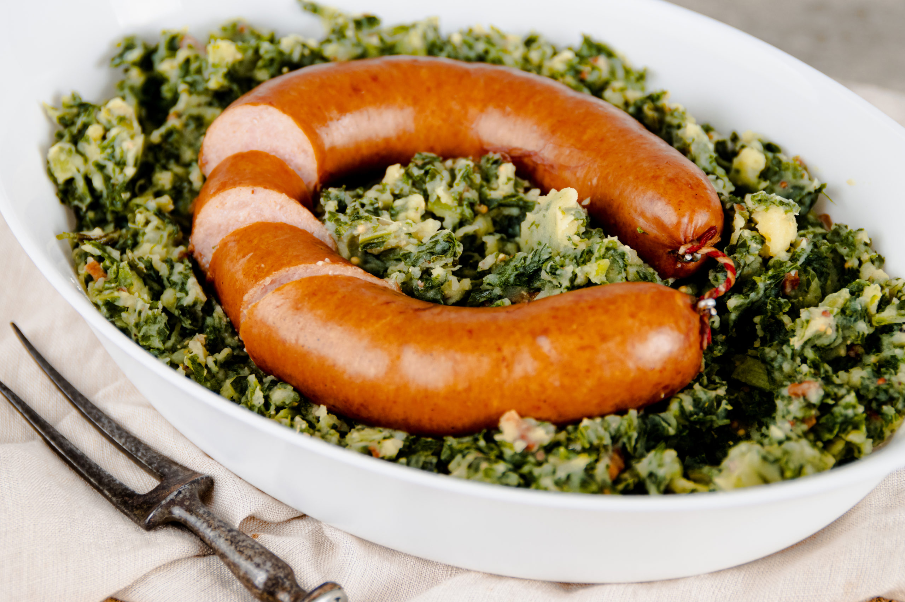

Boerenkool

Boerenkool is a traditional Dutch dish, which is typically enjoyed in
the wintertime, i could write an entire article on it, but as many
Dutch food is meant to be: No embellishment needed, cook and
let the dish speak for itself.
Ingredients:
- 500g Potatoes
- 500g Boerenkool
- 250g Bacon rashers
- 1 whole Rookworst
So, how do we make it?
-
Put the potatoes in a big pot, fill with water until potatoes are
just about submerged.
-
Put the boerenkool on top and cook for about 10 minutes.
-
After 10 minutes add the rookworst on top, and let it sit on medium
heat for 20 more minutes.
-
Take the pan off the stove and mash the potatoes and boerenkool.
-
Take a skillet and bake the rashers until golden brown, add these to
the mash.
-
Finally, put the mash in a nice bowl, or leave in the big pot, put it
all on the table, put the rookworst on top and enjoy!